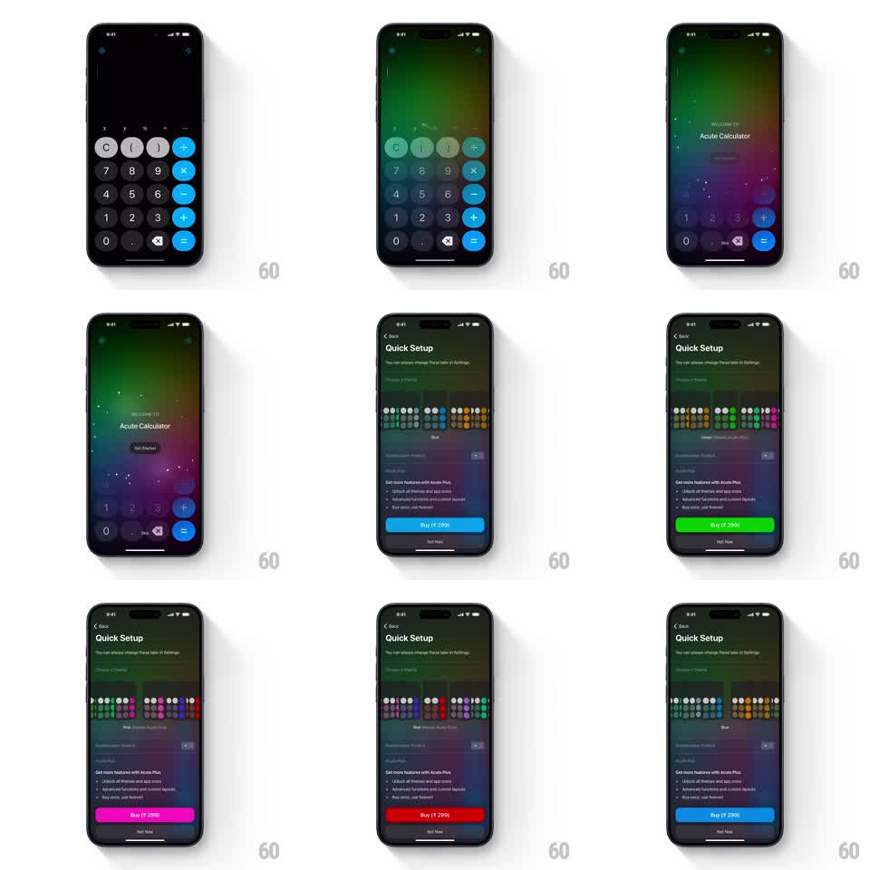

Media
Frame-by-frame

Rebuild this interaction 1:1: Acute Calculator's onboarding - the calculator UI blurs into a colorful aurora backdrop while a Quick Setup theme picker retints the whole scene in real time.

Rebuild this interaction 1:1: Acute Calculator's onboarding - the calculator UI blurs into a colorful aurora backdrop while a Quick Setup theme picker retints the whole scene in real time. ## Integration Integration: stack-agnostic spec - springs given as stiffness/damping, timed motions as duration + curve; map every value to your framework and animation library of choice. ## Scene Opens on the calculator (dark keypad, blue accents). The UI blurs and dims into the background as "Welcome to Acute Calculator" fades in over a glowing aurora gradient. Get Started leads to "Quick Setup": rows of colored theme dots; tapping a dot retints the aurora, the keypad accents behind the blur, and the Buy button (blue, green, pink, red). ## Motion spec Pattern: blur-dive transition + live theme retint. - Calculator to welcome: the keypad layer blurs from 0 to ~30px radius and dims 40% over 500ms (ease-out) while the aurora gradient fades up beneath it; the welcome title rises 16px and fades in (400ms, 100ms delay). - The aurora is a slowly drifting multi-color blob field (20s loop, large soft radial gradients translating on sine paths). - Tap a theme dot: the dot pops (scale 1 to 1.3 with a white ring appearing, spring ~450/22), the previously selected dot's ring collapses (150ms), and every accent in the scene - aurora hue set, blurred keypad operator keys, Buy button - crossfades to the new color over 300ms. - The theme dot rows scroll horizontally with a rubber-band edge (overscroll stretch ~0.3x). - Buy button holds its pill shape; only its color changes. ## Calibration - The blur is the transition: content behind stays legible as shapes but never readable. - Retint is simultaneous across all tinted elements - no per-element lag. ## Reduced motion Blur reduces to a dim-only fade; retints crossfade. ## Don't miss - The aurora must feel alive behind the blur - slow drift, not a static gradient. - Selected theme dot keeps a white ring; unselected dots are flat.